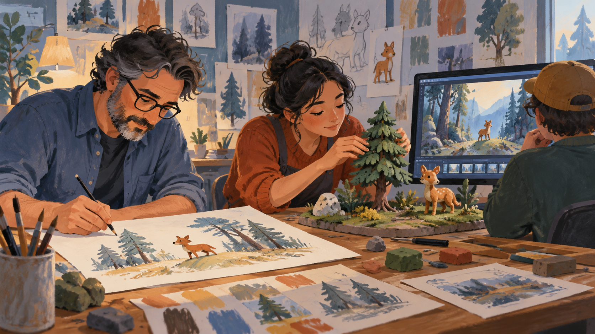

기업과 산업 / 상업과 유통
아마존 — 주문 버튼 뒤에는 무엇이 남아 있을까
2010년대 아마존 사례를 통해 온라인 주문과 물류·회원제·노동의 연결을 읽습니다.
이야기 읽기A NEW WALK
이번에 함께 읽을 이야기 6편입니다.
소주제별 서가 ↗기업과 산업 / 상업과 유통
2010년대 아마존 사례를 통해 온라인 주문과 물류·회원제·노동의 연결을 읽습니다.
이야기 읽기
기업과 산업 / 브랜드와 소비
2013~2017년 봄바스 사례에서 판매 상품·기부 약속·실제 필요를 함께 생각합니다.
이야기 읽기
기업과 산업 / 경영과 조직
픽사의 OpenUSD 공식 설명을 통해 애니메이션 장면을 함께 만드는 협업의 문제를 읽습니다.
이야기 읽기
컴퓨터와 디지털 / 디지털 생활과 보안
로그인과 언어 설정을 이어 주는 쿠키의 역할과 저장·추적의 차이를 읽습니다.
이야기 읽기
컴퓨터와 디지털 / 디지털 생활과 보안
암호화·변조 탐지·서버 확인을 나누어 보고 HTTPS가 보호하는 범위를 이해합니다.
이야기 읽기
컴퓨터와 디지털 / 데이터와 기록
가상의 요리 기록 앱을 통해 표·질의·변경 확정과 로컬 데이터베이스의 역할을 읽습니다.
이야기 읽기